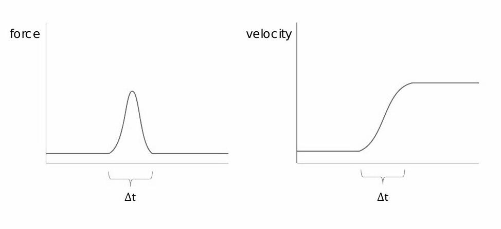
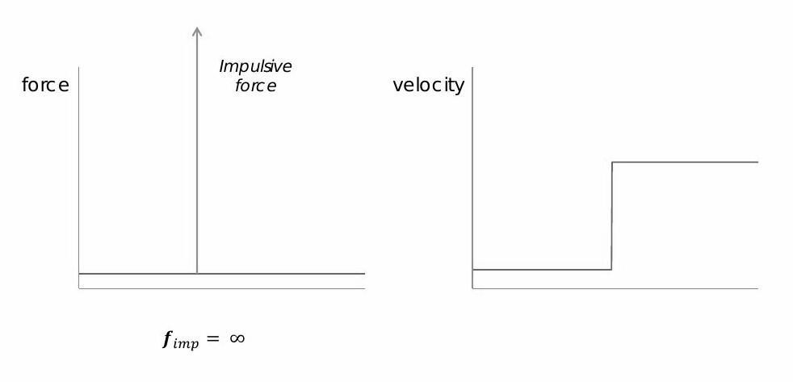
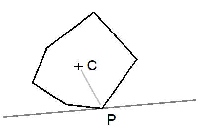
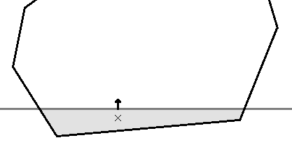

Implementing a small physics engine for a platformer game
The aim is to simulate the motion of a vessel, that evolves in a uniform gravity field and in a static world, in a Newtonian frame. I restrict this work on a 2D space, even if the present work remains valid in 3D with some adaptations.
After firstly introducing the equation of motion, I will then detail the impulse response from a single contact, before resolving the question of penetration, and finally, describing the limitations of this simple model, besides putting forward an extension to notably take into account the dampers on the vessel's feet.
1. Equation of motion
The state of a rigid body is defined by the position of its center of inertia ( called \(\vec{C}\) ) and its rotation ( called \(\Omega\) ).
Both parameters define a local frame attached to the rigid body.
The velocity of the center of inertia is thereafter called \(\vec{v}\), while the rotational velocity is noted \(\omega\).
The equation of motion is:
$$ m \dot{\vec{v}} = m \vec{g} + \sum \vec{F} $$
$$ I \dot{\omega} = \sum \vec{p} \times \vec{F} $$
where
- \(m\) is the mass of the body,
- \(I\) its rotational inertia,
- \(\vec{g}\) the gravity action,
- \(\vec{F}\) a force applied at the point \(P = C + \vec{p}\) of the body.
With only the gravity, the motion can be integrated with the exact integration scheme:
void simulate_1(float dt)
{
// Motion integration
bodyPos += dt * bodyVel;
bodyRot += dt * bodyRotVel;
// Gravity
bodyPos += 0.5 * dt * dt * gravity;
bodyVel += gravity * dt;
// [...]
}
2. Computing a contact response
When the body hits a fixed obstacle, a reaction force prevents penetration. With the rigid body approximation, the velocity of the body has a gap at the hit time. Consequently, the contact response is defined by a velocity gap.
|
 |
 |
| Soft reaction force, with a soft body. | Impulse, with a rigid-body. |

When the contact is made, the reaction force will prevail on other actions, such as gravity. I therefore use the approximation of a single force, with a constant direction. From the integration of the equation of motion, I obtain:
$$ m \vec{\delta v} = \int_{\delta t} { \vec{F} } $$ $$ I \delta \omega = \vec{p} \times \int_{\delta t} { \vec{F} } $$ This yields to: $$ \delta \omega = \frac{m}{I} \vec{p} \times \vec{\delta v} $$ The goal is now to compute the variation of both the velocity \(\vec{\delta v}\) and the angular-velocity \(\delta \omega\). The velocity delta of the contact point \(P\) verifies two relations. The first is the rigid body cinematic relation $$ \vec{\delta v_P} = \vec{\delta v} - \vec{p} \times \vec{\delta \omega} $$ and the second is ruled by the contact properties (rebound and friction coefficients) and the impact velocity before the hit $$ \vec{\delta v_P} = - \vec{v}^{\star} $$ With \( \vec{n} \) being the normal of the surface of the obstacle and \( \vec{t} \) the tangent, I obtain: $$ (\delta \vec{v} \cdot \vec{n}) \left( 1 - \frac{m}{I} \vec{p} \times ( \vec{p} \times \vec{n} ) \cdot \vec{n} \right) = - \vec{v}^{\star} \cdot \vec{n} $$ $$ (\delta \vec{v} \cdot \vec{t}) \left( 1 - \frac{m}{I} \vec{p} \times ( \vec{p} \times \vec{t} ) \cdot \vec{t} \right) = - \vec{v}^{\star} \cdot \vec{t} $$
The pseudo-code:
const float moverI = 0.20f; // (depends on the object geometry) void simulate_2(float dt) { // [...] Motion integration + Gravity // Contact dvel = vec2(0.f, 0.f); drotvel = 0.f; for (cnt in compute_contacts()) { // Rebound const float reboundCoef = 1.2f; // (depends on the surface's type) float alpha = cnt.normal.x * ( cnt.pt.y*cnt.pt.x*cnt.normal.y - cnt.pt.y*cnt.pt.y*cnt.normal.x) + cnt.normal.y * (-cnt.pt.x*cnt.pt.x*cnt.normal.y + cnt.pt.x*cnt.pt.y*cnt.normal.x); alpha = 1.f - moverI * alpha; dvel.x -= dot(cnt.vit,cnt.normal) * reboundCoef / alpha * cnt.normal.x; dvel.y -= dot(cnt.vit,cnt.normal) * reboundCoef / alpha * cnt.normal.y; const float fmoment = cnt.pt.x * cnt.normal.y - cnt.pt.y * cnt.normal.x; drotvel -= moverI * dot(cnt.vit,cnt.normal) * reboundCoef / alpha * fmoment; // Friction const float frictionCoef = 0.1f; // (depends on the surface's type) float alphaT = cnt.tangent.x * ( cnt.pt.y*cnt.pt.x*cnt.tangent.y - cnt.pt.y*cnt.pt.y*cnt.tangent.x) + cnt.tangent.y * (-cnt.pt.x*cnt.pt.x*cnt.tangent.y + cnt.pt.x*cnt.pt.y*cnt.tangent.x); alphaT = 1.f - moverI * alphaT; dvel.x -= dot(cnt.vit,cnt.tangent) * frictionCoef / alphaT * cnt.tangent.x; dvel.y -= dot(cnt.vit,cnt.tangent) * frictionCoef / alphaT * cnt.tangent.y; const float fmomentT = (cnt.pt.x * cnt.tangent.y - cnt.pt.y * cnt.tangent.x); drotvel -= moverI * dot(cnt.vit,cnt.tangent) * frictionCoef / alphaT * fmomentT; } bodyVel += dvel; bodyRotVel += drotvel; }
Results and discussion:
While a single simulatenaous contact is made, this method will yield good results. However, it can produce overreaction with multiple simultaneous contacts, since the body's velocity is not updated between each contact evaluation.
| Rebound with one contact point with low friction. | Overreaction with two contact points. |
Let's take an example of a body that will rebound on its two feet. Let denote the contact points \( \vec{p_1} = (-L, h) \) and \( \vec{p_2} = (L, h) \) and the contact normal \( \vec{n} = (0, 1) \). This leads to: $$ \delta \vec{v} \cdot \vec{n} = \frac{-2}{ 1 + \frac{m}{I} L^2 } \vec{v}^{\star} \cdot \vec{n} $$ There is overreaction when the velocity gab ( \( \delta \vec{v} \) ) is higher than the rebound velocity ( \( \vec{v}^{\star} \) ). The good news is that the overreaction condition only depends on the body's geometry and mass repartition.
Let's now condider a static case when a body stands on the floor. The scheme admits a stationnary point with: $$ \vec{v} = \left( \frac{1}{C_r} - 1 \right) \delta t \vec{g} $$ where \( C_r \) is the rebound coefficient such that \( C_r \ge 1 \). This stationnary state depends on \( \delta t \), so the scheme can produce spurious upward motion when the time-step varies a lot.
3. Resolution of the penetration
There are 2 methods to compute the penetration. The first method is to compute the exact time when the body enters in contact and to split the time-frame simulation in two parts, before and after the contact. The second method is to work with the penetration at the end of the timeframe, so after a little while of the hit time.
I decided to go with the second method, because it allows to easily work with multiple contacts and its good stability when the body stands on the ground. However, the penetration resolution may fail to be resolved if the time-step or the velocity is too high. As such one or two steps of the first method can be applied to have a state that is closer to the hit, and therefore obtain more precision.

Unfortunately, the contact location is not a single point but a surface, thus a virtual contact-point must be determined. (The contact force is applied from it.) This point is calculated by the barycenter of the intersecting area. This conjecture is similar to the Archimedes force if we consider the obstacle made out of water. Another similarity is to consider the resultant elastic-force if the matter of the intersecting area is displaced on the surface of the obstacle.
After this, the body must be moved to cancel the penetration. I choose the simplest way: translate the body along the obstacle normal vector, such that it no longer penetrates the obstacle.
The pseudo-code:
void simulate_3(float dt)
{
// [...] Motion integration + Gravity
// Contact
dpos = vec2(0.f, 0.f);
for (cnt in compute_contacts())
{
// [...] Rebound
// [...] Friction
// Compute variation of displacement - only translation
dpos.x += cnt.penet * cnt.normal.x;
dpos.y += cnt.penet * cnt.normal.y;
}
bodyPos += dpos;
}
Concerning the contact algorithm, the code is available in TRE.
Results and discussion:
Like with the velocity computation, the displacement method will produce over-displacement when there are multiple contacts. But because the displacements are likely not noticeable, it will still produce good results. However, the rotational velocity and velocity-gap are ignored. Then the scheme tends to produce an unwanted forward motion when the body has contact-points that last several timeframes. I may work in the future to improve the scheme, by properly taking the rotational velocity into account.
4. Faking the landing feet
Adding landing feet with dampers greatly improves the feeling of the contact response. The coupling between the vessel and the feet is not obvious to determine. However, I use a conjectured method to keep it simple and compatible with the kinetic relations established above.
The principle is to use what I call a "transmittance" factor between the foot and the body. When the foot's spring is no stressed, the contact force is completely received by the foot, and the vessel does not perceive the contact force. Conversely, the contact force is fully transmitted to the vessel when the foot reaches its maximal displacement. The coupling is made by forcing the vertical position of the foot: $$ \delta y = t_r p $$ where \( y \) is the foot vertical position, \( t_r \) is the transmision factor and \( p \) the penetration. Additionally, each foot has its own motion, in which the inertia forces from the body motion are ignored. The foot motion is governed by the well-known damped-oscillator equation: $$ \ddot{y} + h \dot{y} + k y = 0 $$
The pseudo-code:
void simulate_4(float dt)
{
// [...] Motion integration + Gravity
// Foot motion (left/right)
foot.pos += dt * foot.vel;
foot.vel += dt * ( -16.f * foot.pos - 3.1f * m_foot.vel);
foot.pos = clamp(foot.pos, -1, 1);
// Contact
for (cnt in compute_contacts())
{
const float dvproj = dot(cnt.vit,vesselup);
const float dyproj = dot(cnt.normal,vesselup);
if (is_foot)
{
float footpart = 1.f; // Transmission factor
footpart = 1.f - max(foot.pos, 0.f) * 1.f; // (foot amplitude is [-1,1] around equilibrum)
footpart = 1.f - (1.f - footpart) * (1.f - footpart); // arbitrary law
footNew.pos += footpart * dyproj * cnt.penet;
footNew.vel -= footpart * dvproj * (reboundCoef - 1.f); // this helps for stability
// remaining part is passed to the vessel
cnt.penet -= footpart * dyproj * cnt.penet;
cnt.vit -= footpart * dvproj * vesselup;
}
// [...] Rebound
// [...] Friction
// [...] Displacement
}
footNew = foot;
}
Results and discussion:
Despite this simple and naive approach, the results are good enough.
| Rebound with horizontal velocity | Rebound with vertical motion only |
Let denote \( p \) the vessel vertical position, \( v \) its vertical velocity and
\( f \) the foot vertical relative position, \( w \) its vertical (relative) velocity.
Let's consider the case where the vessel stands on the ground.
With \( f \in [0,1] \), the scheme admits stationnary points when the following system admits solutions:
$$
\begin{cases}
v = \delta t g \left( \frac{1}{C_r f^2} - 1 \right)
\\
p = \delta t ^2 g \frac{1 - f^2}{f^2} \left( \frac{1}{C_r f^2} - \frac{1}{2} \right)
\\
0 = \delta t w - (1 - f^2) (p + f)
\\
0 = \delta t ( - k f - h w ) - v (C_r - 1) (1 - f^2)
\end{cases}
$$
where
\( C_r \) is the rebound coefficient such that \( C_r \ge 1 \) and
\( g \) the gravity (projected on the up-axis, so the value is negative).
This leads to find a root within \( [0,1] \) of the expression:
$$ - k f^3 - h (1-f^2) f - h \delta t g (1-f^2)^2 \left( \frac{1}{C_r f^2} - \frac{1}{2} \right) - g \frac{1 - f^2 C_r}{C_r} (1 - f^2) (C_r - 1) = 0 $$
It fortuitously admits a single root within \( [0,1] \) as long as there is a stiffness ( \( k \ne 0 \) ).
Moreover, the term introduced by the code commented by "this helps for stability"
helps to maintain the solution far from \( f = 0 \) when the damping is weak ( \( h \rightarrow 0 \) )
or when the time-step is zero.
Indeed, the solution \( f = 0 \) does not feel right regarding the expected stationnary state.
Higher damping/stiffness tends to make the stationnary point closer to 0,
while higher time-step tends to make the stationnary point closer to 1.
The stationnary state depends on the time-step, so the scheme can produce spurious motion when the time-step varies a lot.